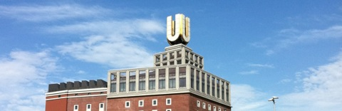
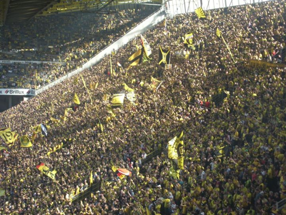
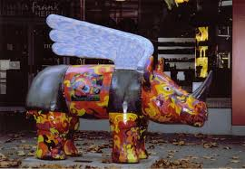

One of my hometowns is definitely Osijek (see also the Wikitravel page). I was born in Osijek, the capital of Slavonia (the land of Slavs, part of the former Roman province Pannonia, with the Limes of the Roman empire) in Croatia.

(for copyright see http://en.wikipedia.org/wiki/Osijek)
{kind=link}
If you know something about Slavonia and Osijek, you know probably, why I could not be persuaded to anything with chocolate or candy, not when I was a small kid, and not now, but potentially with kulen (spicy sausages) or fiš paprikaš.
Osijek lies at the Drava, and is close to the Danube. Europe's biggest wetlands are close to Osijekt too, the Kopački Rit:

(for copyright see http://wikitravel.org/shared/Image:Kopackirit-01.jpg)
{kind=link}
Although it is a relatively small city, quite some famous people are actually from Osijek, including two nobel price winners, chemists, not linguists, and one winner of the Golden boot at the 1998 FIFA World Cup, the legendary Davor Šuker. Actually, Francis, Duke of Teck, the father of Queen Mary, the wife of King George V, and ancestor of the present queen and Royal Family was also born in Osijek.
When I was around three years old my parents decided to follow a call from Germany, and relocate to the city of Dortmund in North Rhine-Westphalia. This city, as you can see, is picturesque and peaceful:

{kind=link}
No, it was not back then. It was right in the heart of the coal mining and steel industry of the Ruhr Area (or the Pott, as we used to call it). It was steaming, loud, dusty, with a permanent heartbeat rhythm in the background, a sledge hammer hitting the steel plate for more than 35 years in the postwar Dortmund. Back then we had the eternal sun in town, the Hoesch coking plants in Hörde that illuminated the city in a reddish yellow light day and night.

(Copyright see heimatsammlung.de)
Between coal piles and railroad tracks we lived in a community with the nicest and funniest people, had the best beers on the planet (and were allowed to consume it from our 16-th birthday on) and countless breweries (check out the Dortmunder Export, a pale lager and the Great Lakes Brewing Company's in Cleveland (Ohio) copy of it). Here the famous Union brewery tower in Dortmund (thanks to Tanja N. for the picture):
{kind=link}

Here is a German story on the beer history in Dortmund.
As another speciality of Dortmund (Berlin often claims the exclusive fame-right for that one, but I am not sure, whether it is justified) the famous Currywurst (check it out, the German Currywurst Museum) and "Pommes (pronounced /pɔməs/!) Spezial" (or Fritten, as we used to call it).
Culturally, it was incredibly vibrant. I confess, we often had to travel to the neighboring city of Bochum and go to concerts to for example the Bochumer Zeche, to see for example a Rockpalast concert with Public Image Limited, The Fall or other famous New Wave and Punk bands of that time. We were so lucky to have the British Forces Broadcasting Service (BFBS) on the radio, and regular broadcasts of the legendary John Peel. Those were the Glory days...
Dortmund was also home of the best soccer team there ever was (thanks to Tanja N. for the photo):

Not much has changed, except that the coking plants and cole mines are gone. There are just traces left of the steel plants, and nature has taken over. Dortmund is now a clean green city. It has its Westfalenpark and the Florian-tower:

...the Syburg and the view on the Ruhr:

its Philharmonie and Concert Hall, and these strange Rhinos distributed in the city:

Dortmund still hosts the best soccer team, the BVB, fantastic beer and pubs, and many places with traditional food (for example Zum Alten Markt, Wenkers am Markt or the Pfefferkorn).

Dortmund is full of interesting language data, native speakers from all over the planet, and citizens interested in linguistics. Dortmund had also some significant contribution to the field of linguistcs. Here are some linguists from Dortmund, for example Martin Haase, Wilhelm Schmidt and Thomas Stolz. Dortmund is an ideal playground for fieldwork and language documentation (did you know that we had at least two dialects in Dortmund, one pronounced the city name as /dɔɐtmʊnt/ and the other as /dɔʔmʊnt/).
Too bad that I had to leave to study in the big wide world. But, I was lucky to end up at The LINGUIST List!
By the way, you might consider supporting it and donate to it.
Thanks to Franjo Pehar, Tomislav Jakopec, Tanja Nolle, Natali Cavar, Joachim Serges and www.microstudio.de, heimatsammlung.de and all the Wikipedia contributors for information and material!